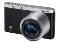

无忌
器材库
全部器材
产品年表
名词百科
榜单
器材库
> APS及其以下画幅可换镜头数码相机 > NX mini

三星
NX mini
分类
APS及其以下画幅可换镜头数码相机
点评
0 条
图片
0 张
评测
8 篇
三星NX mini立足智能相机产品超薄化设计趋势之潮头，以158g的重量和22.5mm的厚度，问鼎全球最轻薄无反相机的桂冠。
产品类型
APS及其以下画幅可换镜头数码相机
综合评分
暂无评分
无忌评测
爱自拍的看过来 三星NX mini评测
规格参数
网友点评
(0)
产品图 / 样片
(0)
评测文章
(8)
规格总览
产品类型
小型传感器可换镜头数码相机
发布日期
2014-03-19
影像规格
影像传感器
BSI-CMOS
影像传感器尺寸
1英寸
有效像素
2050万
镜头和对焦
镜头卡口
Samsung NX-M
兼容镜头
通过转接环使用NX卡口镜头
曝光控制
连拍
22fps高速连拍
取景器/显示屏
LCD尺寸
3.0英寸
LCD像素
46万
LCD特性
触摸屏, 翻转屏
文件输入/输出
无线功能
Wi-Fi, NFC
机身规格
颜色
黑色, 绿色, 粉红色, 白色, 棕色, 橙色
重量
158g
该产品暂无存档的网友点评
该产品暂无存档的产品图
评测 / 相关文章
详细内容
（存档）
爱自拍的看过来 三星NX mini评测
（原站已下线）
［试用］三星 NX mini行摄立陶宛
（原站已下线）
［试用］NX mini出远门：立陶宛随拍
（存档）
［试用］三星NX mini海量样片
（原站已下线）
［资讯］时尚感十足 三星NX Mini发布会纪实
（原站已下线）
［资讯］精致小巧 三星NX Mini开箱图赏
（原站已下线）
［资讯］三星NX mini时尚 新锋线闪耀上市
（存档）
相关文章
［试用］三星 NX mini行摄立陶宛
（原站已下线）
［试用］NX mini出远门：立陶宛随拍
（存档）
［试用］爱自拍的看过来 三星NX mini评测
（原站已下线）
［试用］三星NX mini海量样片
（原站已下线）
［资讯］时尚感十足 三星NX Mini发布会纪实
（原站已下线）
［资讯］精致小巧 三星NX Mini开箱图赏
（原站已下线）
［资讯］三星NX mini时尚 新锋线闪耀上市
（存档）
［资讯］号称最薄无反 三星正式发布NX mini相机
（存档）